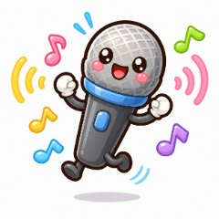

あそびかたを えらんでね
どちらも、こたえるひとは こえを きいて もとの キーワードを あてます。 マイクは localhost か https で つかえます。ろくおんした こえは ほぞんされません。
🎙 つくるひと の ばん
ことば
🙋 こたえるひと の ばん
おとなの ひとが ⭕か❌を おしてね(こたえが でるよ)

さかさクイズどちらも、こたえるひとは こえを きいて もとの キーワードを あてます。 マイクは localhost か https で つかえます。ろくおんした こえは ほぞんされません。
おとなの ひとが ⭕か❌を おしてね(こたえが でるよ)